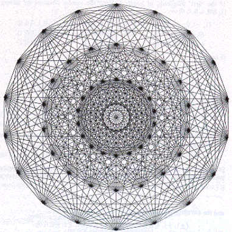
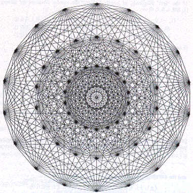This scheme is called a two-dimensional projection of the E8-Lie-geometry and is used in An Exceptionally Simple Theory of Everything
But what’s the reason that the image above being built differently from the image on the left? The image on the left doesn’t connect the opposite vertices. Digging it further I found that half of the time the scheme is wrong. How could something this mathematical be drawn that differently, even the number of vertices were different.
Digging further I see, that
projection of E8 has 30 external vortices, and the figure with
18 external vortices is E7, so the both first images I found
were wrong. This is suspicious and the suspicion approves the
theory. They try to hide information (always clumsy) in many
valid fields: they give different chemical structures for THC
& CBD, for instance, and I gave you
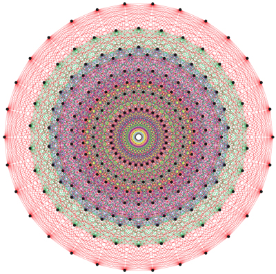 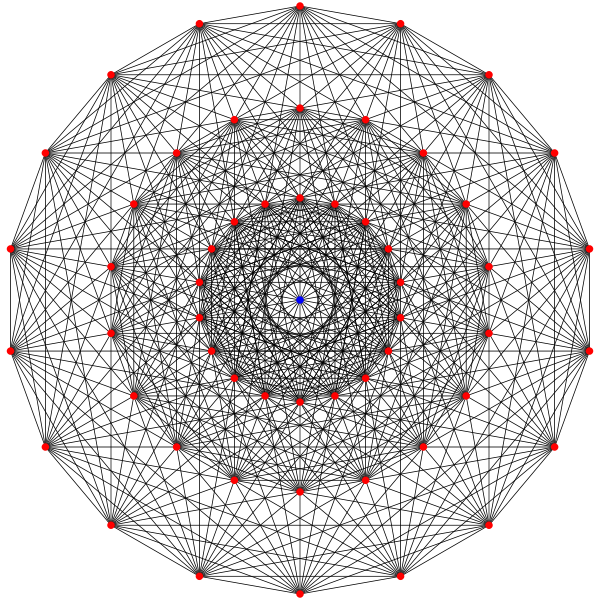
Whether I disinform you on this topic, extremely new for me, or it’s children on the internet messed it up, is yet to be updated.
update: An Exceptionally Simple Theory of Everything uses 30-vortex figure, but if those guys who use E7 instead of E8 didn’t mess up I wouldn’t pay attention. But anyway, it’s a different figure. Only if ancient grammatists didn’t see those inner vortices, when they tried to apply letters to some objective structures of this world.
Similar structures include:
9-cube:
in some other sources named 9-cube enneract graph (here it’s neighboured with it’s orthogonal projection)
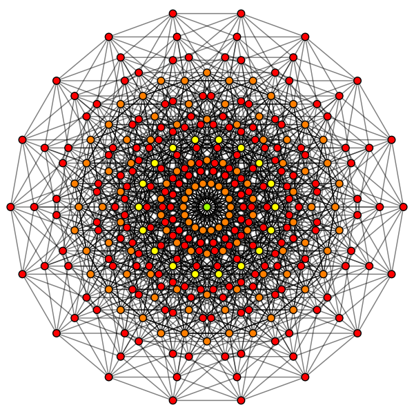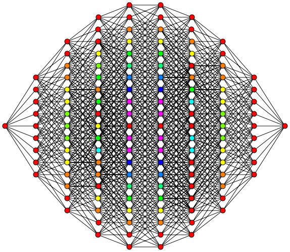
18-gon with 144 rhombs, also known as 18-gon rhombic dissection.
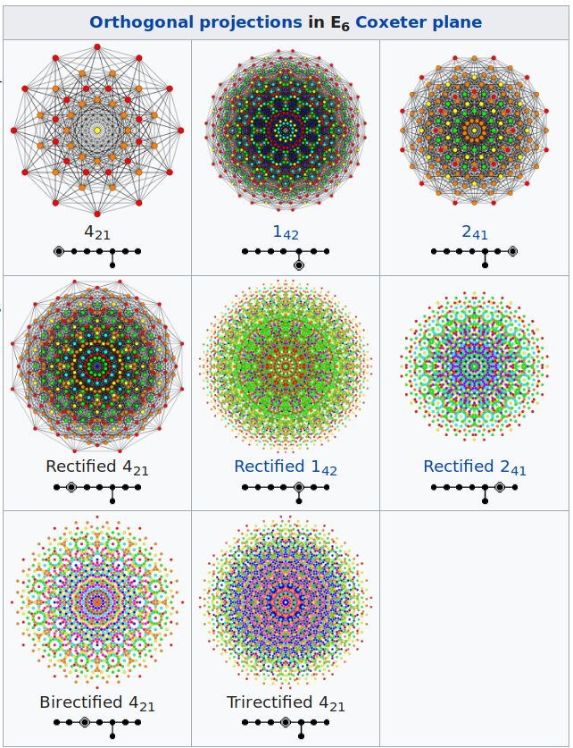
or it could be some other mathematical structure:
and these traceries are true on some physiological
or some transcendent whatever level, because I saw something
like the complex ones just before I saw some entities which
might be considered transdimensional (literally
angel & devil fighting for me when I took just 1/15th
of psylocibin and got a short episode of psychedelic
nature) and I saw such a pettern when I woke up and
it was standing before my inner sight long before that short
trip.
But then I didn’t know anything about these forms, so I didn’t even count vortices or some other features.
In case you wanna know what allows me to adjust such ultra-modern scientific diagrams to supposedly ancient structures? I told you, this is not the first attempt of human civilization to become divine. So if scientists of the past managed to invent steam engine (Hero of Alexandria) and to discover concept of elements (Democritus) – who knows how far could we secretly advance until dark ages took over.
Or it could be something more simple, like this one:
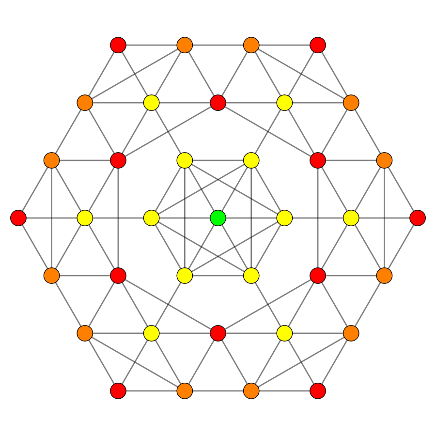
9-orthoplex:
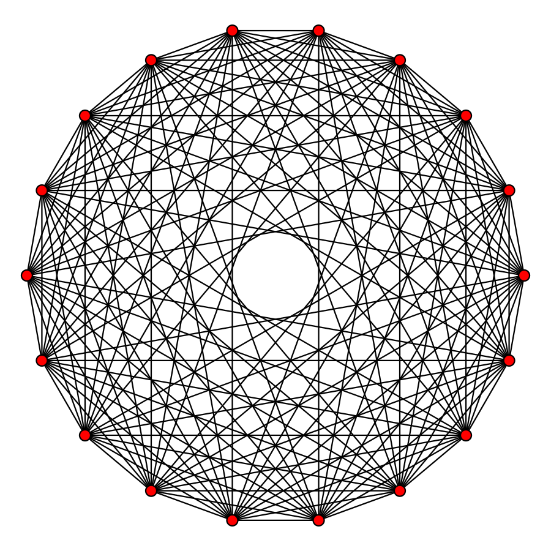
Searching for these images I found that lados stands for sides in spanish, and лады (lad’s) are modes in russian
And I went searching on, remembering how much magicians love polygons, I found some esoteric teaching, unifying octakaidecagon with spirituality chakra of the third eye:
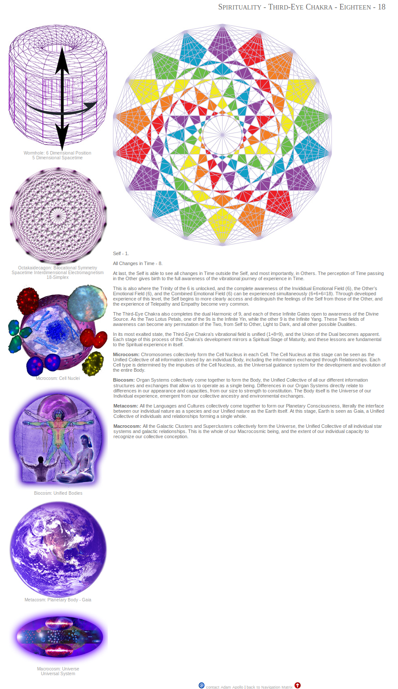
I leave it as is, for I don’t know these teachings, but I will give you the link in case you want to read about it more: http://adamapollo.info/sacred_knowledge/unified_harmonic_matrix
(I've no internet at the moment to see why I decided to give this link, but I will edit this part when I figure it out) or maybe not
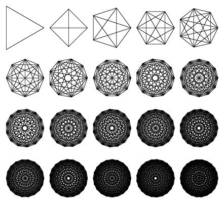the last one is 22, btw. the 231 gates as is.
This topic also can relate to music:

Twelve tones, twelve months, is it related? Chinese have more than 12 constellations in their astrology, so let's compare it to their musical notation when we know it.
The End of the secret level.